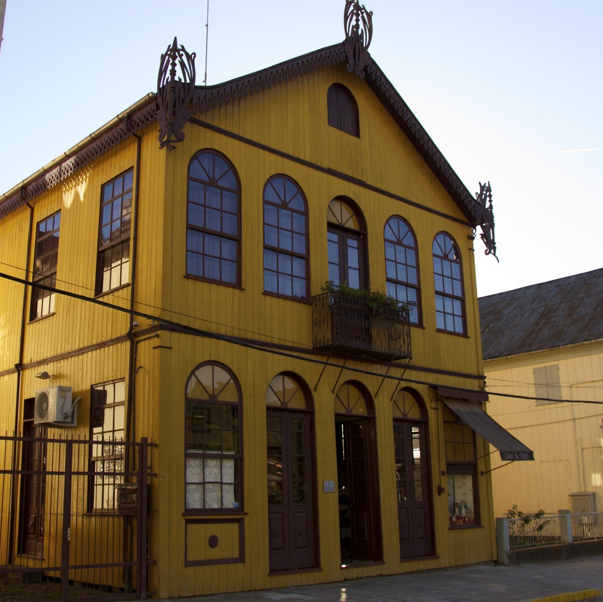

Under construction. Project by: Natália B. Guzzo and Guilherme D. Garcia

In the 19th century, Italian immigrants moved to North and South America. In Brazil, they first immigrated to the southeastern region, and subsequently to the southern region—especially to the southernmost state in the country, Rio Grande do Sul. Many of these immigrants were speakers of Veneto, a Romance language spoken in northern Italy. As time went by, a dialect of Veneto, Brazilian Veneto, developed in the area(s) where the immigrants settled—we refer to this dialect as Talian. In total, there are approximately 500,000 speakers of Talian in Brazil—with varying degrees of proficiency.
We are currently working on a written corpus of Talian, which will be made available here in the near future. Our project focuses on the Talian spoken in the Italian Immigration Area (IIA), the area of Rio Grande do Sul where Italian immigrants first settled. The picture shows a historic house in the IIA town of Antônio Prado, where we can find numerous speakers of Talian.
The towns and cities in red have Talian as their co-official language, alongside (Brazilian) Portuguese. The gray circle is an approximation representing the Italian Immigration Area in the state of Rio Grande do Sul.
Our corpus consists of internet texts from the IIA as well as excerpts from books written in Talian. Text processing is being done in R (R Core Team, 2020), and optical character recognition (OCR) is being carried out using Google’s Tesseract (Smith, 2007). As a starting point, we used trained data from Italian in Tesseract, and later checked for potential mismatches. We are currently developing the first version of the corpus, which we plan to make available during the fall of 2020—see below.
21,574 words (in progress)1,678 sentences (in progress)| sentence | word | frequency | logFrequency | author | year |
|---|---|---|---|---|---|
| Nanetto va cognosser Val Véneta. | nanetto | 47 | 3.850 | baldissera | 2003 |
| Nanetto va cognosser Val Véneta. | va | 23 | 3.135 | baldissera | 2003 |
| Nanetto va cognosser Val Véneta. | cognosser | 2 | 0.693 | baldissera | 2003 |
| Nanetto va cognosser Val Véneta. | val | 18 | 2.890 | baldissera | 2003 |
| Nanetto va cognosser Val Véneta. | véneta | 17 | 2.833 | baldissera | 2003 |
As can be seen from the sample above, the corpus follows a tidy data approach (Wickham & others, 2014). As a result, little if any data wrangling is needed to analyze the data.
R Core Team. (2020). R: A language and environment for statistical computing. Vienna, Austria: R Foundation for Statistical Computing.
Smith, R. (2007). An overview of the tesseract OCR engine. Ninth international conference on document analysis and recognition (ICDAR 2007), 2, 629–633.
Wickham, H., & others. (2014). Tidy data. Journal of Statistical Software, 59(10), 1–23.
Copyright © 2020 Natália Brambatti Guzzo